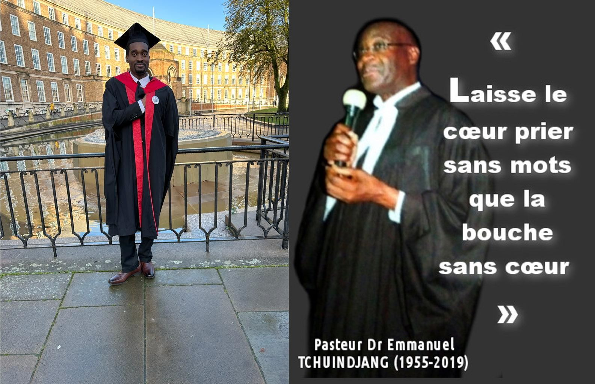
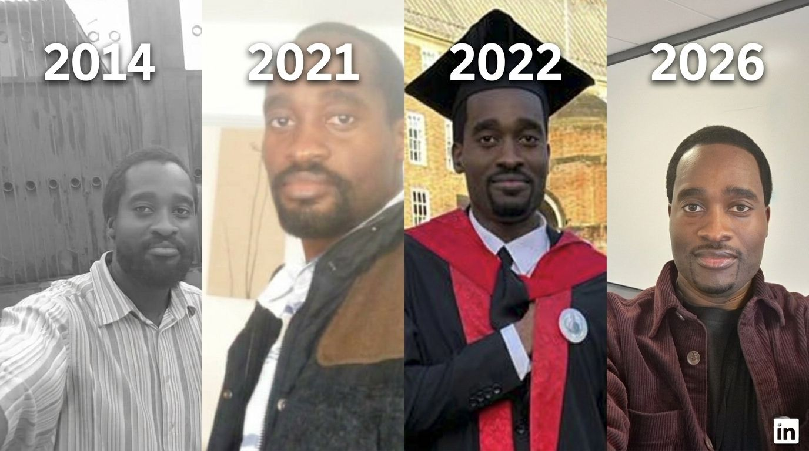
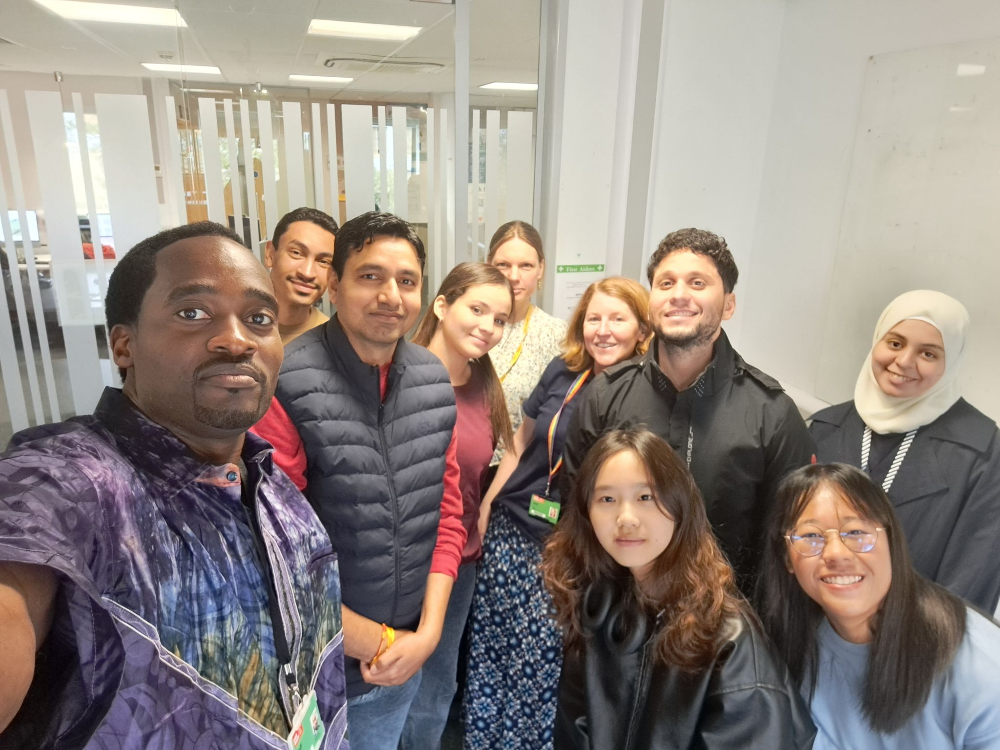
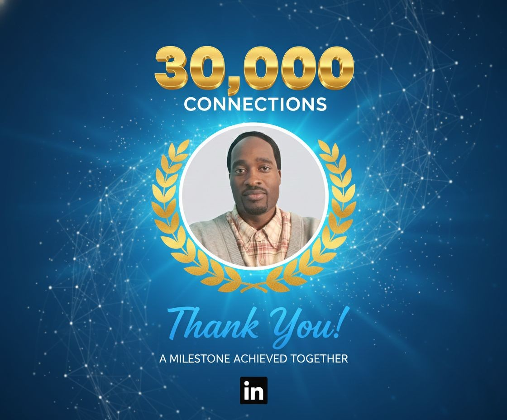
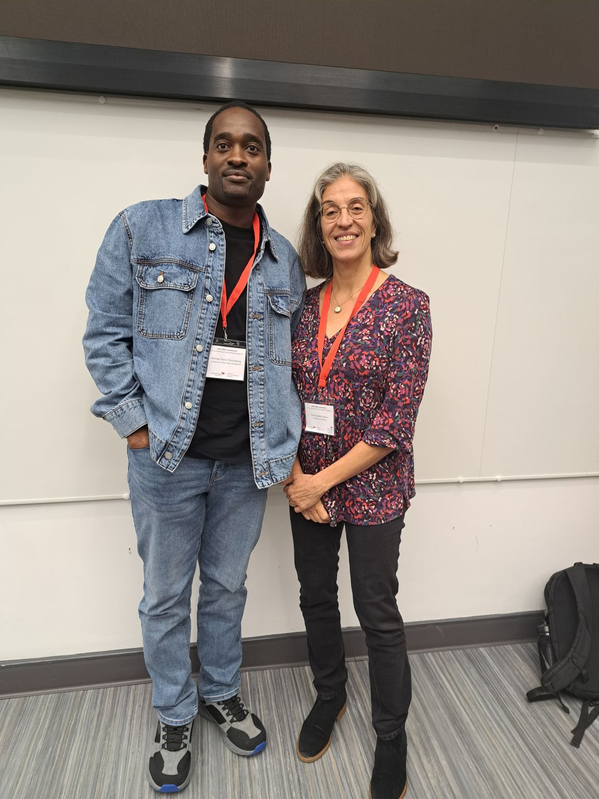
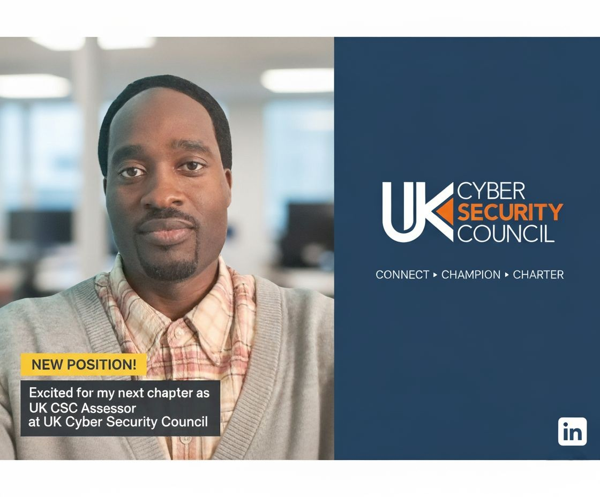
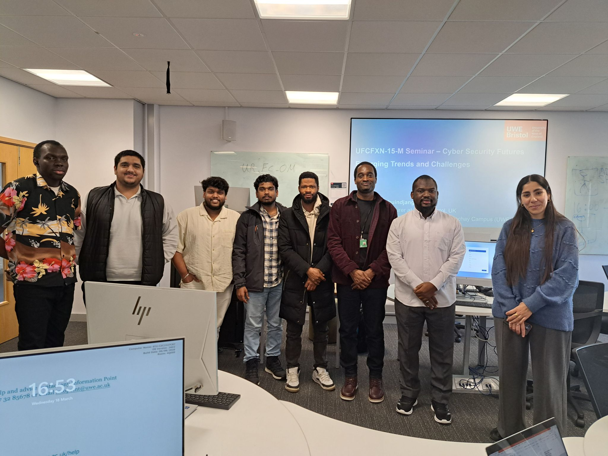
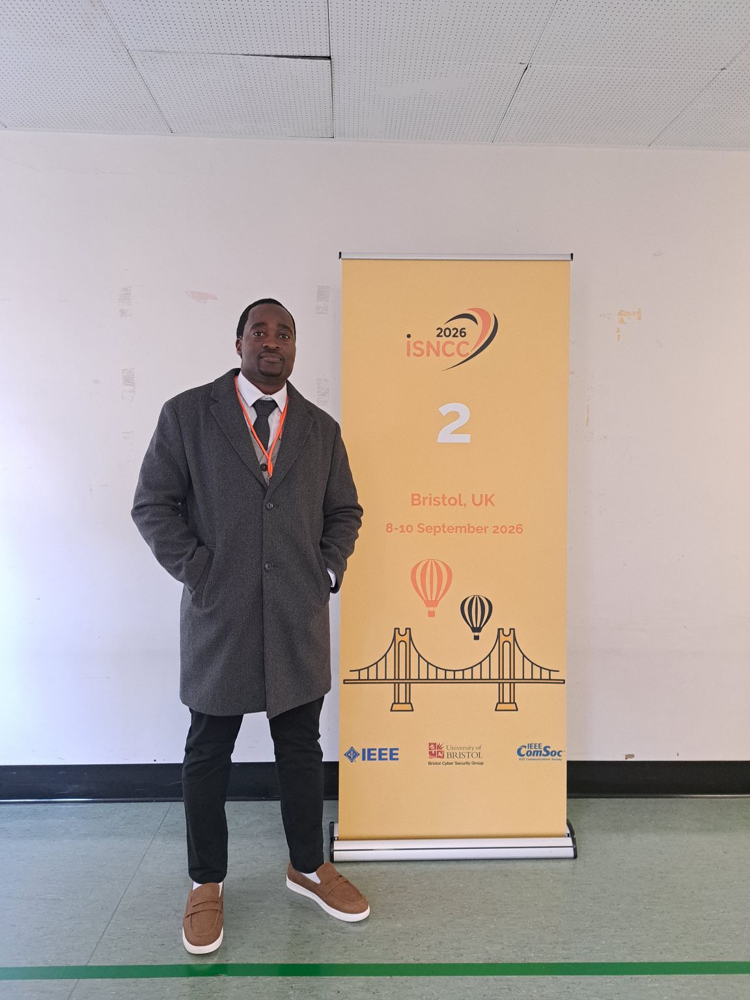
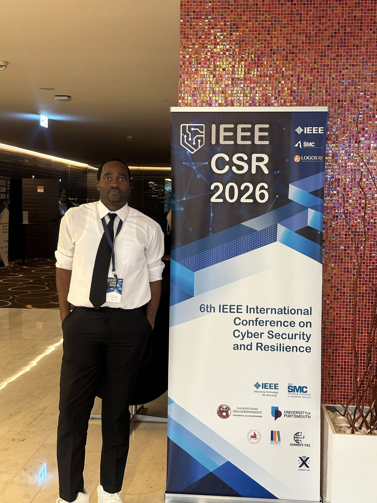

Some stories begin with a plan.
Mine did not.
Long before cybersecurity became my profession, before research papers, awards, conferences, LinkedIn, or even the idea of becoming a cybersecurity researcher, there was a computer.
My father's computer.
Back then, Western Christian missionaries had given it to him as a token of gratitude for his expertise in theology in my homeland, Cameroon.
In fact, until his death, he was the only professor in Central Africa specialising in the History of Christianity.
Members of the Evangelical Church of Cameroon affectionately called him “The Church Father” because of his significant influence on the formation and development of generations of pastors.

I remember being fascinated by it. I did not fully understand what I was doing, but I was curious enough to explore it, change things, and eventually, accidentally format his brand-new computer.
At the time, I had no idea that this small act of curiosity was pointing towards something much bigger.
I was simply a curious kid.
I did not know that computers would eventually become my field of study, my profession, my research environment, and one of the main ways I would connect with people around the world.
The part of me I had to hide
I grew up in a deeply religious environment; my childhood was filled with books about good & evil figures, and divine missions.
For the longest time, I dreamed of becoming one of them.
My relationship with school was complicated.
My father cared deeply about my education. For him, education was not something to compromise on. For me, however, there was another world developing quietly in the background.
I became increasingly interested in spiritual and religious things that did not necessarily fit the path my father expected me to follow.
Unlike many children my age, I wanted to become a spiritual guru. And I was afraid.
I deliberately kept part of my guru personality in the shadows for years. I hid aspects of who I was and what I was doing because I was afraid of what would happen if my father discovered them.
It was not simply a fear of disagreement.
I believed that revealing that secret could seriously damage, or even end, our relationship.
And that was something I could not afford to lose.
Whatever disagreements we had about education, my relationship with my father was, for me, the most important relationship I had on this earth.
So I kept that part of myself hidden. It all began with a spiritual crisis that nearly cost me my life. I was forced to step away from school and devote myself deeply to spiritual matters.
It was during this difficult period that I was secretly introduced to a spiritual group, opening a completely unexpected chapter of my life.
The spiritual group that first rejected me
Somewhere along that journey, I secretly became involved with a close-knit group of spiritual leaders led by their chief, L’Ermite Panet.
At first, they rejected me.
I was considered “too audacious.”
Perhaps they saw something in me that I had not yet learned how to understand myself.
But with determination and courage, I learned. I contributed.
And eventually, the person who had initially been considered “too audacious” became someone others turned to for guidance.
Unexpectedly, I became a mentor and a spiritual guide within the group.
In 2014, I co-founded L'Équipe du 7 with L'Ermite Panet. A small community of people dedicated to studying and mastering religious subjects.
Looking back, this was one of the first times I learned a lesson that would repeat itself throughout my life:
A rejection does not necessarily tell you where you belong. Sometimes it simply forces you to find another door.

A promise, a loss, and a decision
My relationship with my father continued to shape my decisions.
There were disagreements, struggles, and periods of turmoil. At some point, I made him a promise that I would focus on school.
Life, however, does not always give us the time we think we have.
Unexpectedly, in 2019, my father passed away at the most painful moment of my life.
After my father's death, that promise began to weigh on me in a completely different way.
The inner turmoil surrounding my education, the things I had left unfinished, and the promise I had made all came back to me.
I decided to return to education.
But I did not simply want to return to the same environment.
So, in late 2021, I left my homeland, Cameroon.
I decided to begin a new chapter in the United Kingdom (UK).
The rejection from UWE
I applied to the University of the West of England (UWE) to pursue a master's degree in cybersecurity.
There was one major problem.
My academic English was not strong enough. I was a native French speaker with no prior experience in an English-speaking environment.
I was rejected.
But once again, the rejection was not the end of the story.
Instead, I was offered another route: a pre-sessional Academic English course.
So I took it and had the opportunity to learn English with Amy Coryat, whose guidance became a transformative influence on my journey.
For several months, I worked on the weakness that had stood between me and the opportunity I wanted.
English.
Eventually, I was accepted onto the MSc Cybersecurity programme.

What happened next still feels remarkable when I look back at where I had started.
In late 2022, I graduated with an outstanding Distinction, achieving 80% overall, including 88% for my MSc project.
The same person who had once been rejected because of his academic English had completed a demanding cybersecurity degree with an exceptional result by UK academic standards.
Another door had opened.
But there were many more doors to come.
LinkedIn was never part of the plan
My LinkedIn story is almost accidental.
After my MSc graduation, a former classmate Bright Addai asked why I wasn’t on LinkedIn.
I told him, “I’m not a social media person.” But he insisted, and eventually, I gave him access to my long-forgotten account, which had only 10 connections at the time.
He rebuilt my profile, it wasn’t great, but it was enough to spark my motivation, and that’s how my LinkedIn journey began.
By mid-2023, I had become active on the platform.
I was mostly observing.
Then I tried something else.
There was a cybersecurity expert on the platform whose work I really admired.
I reached out, hoping they might become a mentor to me.
They declined.
Another rejection.
But by then, I had started to understand something about myself.
I did not need to wait for someone to give me permission to contribute.
I decided to do what I knew best.
Share knowledge.

When people started noticing
I started writing.
I started engaging with cybersecurity professionals, researchers, AI experts, and people whose work I found interesting.
I was not following a sophisticated personal branding strategy.
I was simply curious and trying to contribute something useful.
Then something unexpected happened.
People started noticing.
My writing began to attract conversations.
People began sharing my posts. Researchers and professionals started engaging with my ideas. The conversations became more frequent, and the network began growing.
Eventually, I realised that people were not simply reading what I wrote. They were coming back for the way I connected ideas:
- Cybersecurity
- Artificial intelligence
- Research
- Human behaviour
- Writing
- Philosophy and Religion
- Humour
Sometimes even perspectives they did not expect from someone working in cybersecurity.
I had spent years studying religious subjects and developing a completely different intellectual side of myself. Most people encountering my cybersecurity work would probably never guess it.
Somehow, those different worlds influenced the way I communicated.
I began combining technical knowledge, storytelling, reflection, different writing styles, and perspectives in ways that felt natural to me, yet were often mind-blowing to experts on the platform.
I was not trying to sound like everyone else.
I was trying to sound like myself.
From being noticed to being trusted
The numbers began changing.
Reached 30,000 connections, the platform maximum, in just 29 months.
Then more.
Eventually, more than 40,000 followers.
But the numbers were never the most interesting part.
The interesting part was what happened behind them.
Researchers contacted me.
Cybersecurity professionals engaged with my work.
Students asked for guidance.
Organisations invited me to contribute.
People I had never met began telling me that something I had written had changed the way they thought about a topic.
That meant more to me than a follower count ever could.
Academia: another long series of closed doors
My academic journey was not suddenly easy after the MSc.
In fact, the next chapter brought another series of rejections.
I applied for PhD opportunities at universities across the UK nine times.
I was invited to six interviews.
I failed five of those interviews.
Five times, I came close and still did not get the opportunity.
It would have been easy to interpret those failures as evidence that the journey was not meant for me.
Instead, I kept applying.
Eventually, one opportunity changed everything.
In October 2024, I secured a fully funded PhD opportunity at UWE after successfully defending my PhD proposal on cybersecurity and artificial intelligence.
And the journey that followed has been extraordinary.
The award I never expected
My research gradually moved into the security of large language models (LLMs), adversarial AI, and multi-turn jailbreaking.
With the fantastic support of my supervisory team, Dr. Nathan Duran, Prof. Phil Legg, and Dr. Faiza Medjek,
My first major PhD milestone came in July 2025, when I presented a poster at the 4th Cardiff NLP Workshop at Abacws in Cardiff, UK.
It was an early presentation of a novel attack I was developing against LLMs.
What surprised me was that people noticed not only my research, but also the way I carried myself and explained my findings in public.
That preliminary study continued to evolve and eventually became a paper accepted for presentation at the 24th UK Workshop on Computational Intelligence (UKCI 2025), held at Edinburgh Napier University from September 3–5, 2025.
Presenting that work at this annual academic conference was already a major milestone for me.
Then something happened that I will never forget.
After my presentation, I received congratulations from Prof. Gabriela Ochoa , a distinguished computer scientist, whose work I greatly respect.
For a researcher still building his path, that moment meant a lot.
But there was another surprise.
The paper received the UKCI 2025 Best Paper Award.
I became the first Black African recipient of the award in UKCI's history.
I remember thinking about how strange the journey had been.
The child who had once been curious enough to format his father's brand-new computer had eventually found himself standing in an academic environment receiving recognition for cybersecurity research.
The award was not simply a trophy.
For me, it also felt like a tribute to my late father and to one of the prophecies he shared during his sermons, which I had never forgotten.
“𝘛𝘩𝘪𝘴 𝘴𝘩𝘢𝘭𝘭 𝘣𝘦 𝘸𝘳𝘪𝘵𝘵𝘦𝘯 𝘧𝘰𝘳 𝘵𝘩𝘦 𝘨𝘦𝘯𝘦𝘳𝘢𝘵𝘪𝘰𝘯 𝘵𝘰 𝘤𝘰𝘮𝘦: 𝘢𝘯𝘥 𝘵𝘩𝘦 𝘱𝘦𝘰𝘱𝘭𝘦 𝘸𝘩𝘪𝘤𝘩 𝘴𝘩𝘢𝘭𝘭 𝘣𝘦 𝘤𝘳𝘦𝘢𝘵𝘦𝘥 𝘴𝘩𝘢𝘭𝘭 𝘱𝘳𝘢𝘪𝘴𝘦 𝘵𝘩𝘦 𝘓𝘰𝘳𝘥...”
From my late father, Emmanuel Tchuindjang’s sermon on Psalm 102:18 (KJV), delivered on 29 July 2005. Quote translated from the original French.
This award represented years of uncertainty, rejection, persistence, learning, and opportunities that had initially looked like disappointments.

And the doors kept opening
The award was not the end of the journey.
It became one milestone among many.
Another paper was pusblised in Springer Nature’s Cybersecurity , a Q1 Scopus journal in Cybersecurity and Artificial Intelligence!
I continued publishing research and presenting my work at international academic conferences.
Most recently, I attended the 2026 IEEE International Conference on Cyber Security and Resilience (IEEE CSR 2026) in Lisbon, Portugal, followed by the 13th International Symposium on Networks, Computers and Communications (ISNCC 2026) in Bristol, UK.
Each conference gave me another opportunity to present my research, exchange ideas with researchers from around the world, and continue growing as a researcher.
At UWE, while teaching as an Associate Lecturer, I also supervised many MSc students, two of whom, Chris Mayo and Mohammed Almasabi, went on to publish their work in academic journals.
One of them was even recognised by the journal's editorial team for making a significant contribution to the publication.
My growing impact was not limited to academia.
I was also becoming increasingly involved outside academia, taking on a growing number of professional engagements.
I served as a mentor at Startupbootcamp , ranked the #1 startup accelerator in Europe, supporting emerging companies working to turn innovative ideas into real-world solutions.
I recieved an invitation as Expert Analyst for Heads Talk Analysis Media , featured among the Top 10 Apple Podcasts Government charts, where I contribute perspectives on cybersecurity, AI, and emerging technologies.
I also became involved with the UK Cyber Security Council , the only body chartered to award professional titles in cyber security.
I contributed through its expert volunteer activities and served as an assessor, supporting the evaluation and recognition of qualified professionals and organisations across the UK.
I continued mentoring students, reviewing research, collaborating with researchers, and contributing to discussions around cybersecurity and artificial intelligence.
My work also received recognition through professional communities and thought-leadership platforms, including recognition among the Thinkers360 Top 50 Cybersecurity Thought Leaders for 2026 .
Meanwhile, the requests on LinkedIn continued to grow.
Requests for advice.
Requests for collaboration.
Requests for mentorship.
Requests to contribute to projects, publications, discussions, and professional initiatives.
The person who had once asked someone else to become his mentor was now receiving messages from people asking him to become theirs.

The real story behind the milestones
From the outside, a journey like this can look surprisingly smooth.
A distinction.
A funded PhD.
A Best Paper Award.
Professional recognition.
Thousands of connections and more than 40,000 followers.
Publications.
Mentorship.
Invitations and opportunities.
But the visible milestones hide the invisible years.
The arguments.
The secrets.
The grief.
The uncertainty.
The language barrier.
The nine PhD applications.
The six interviews.
The five failed interviews.
The people who said no.
And all the moments when there was no guarantee that the next door would open.

I am still that curious kid
Today, my work sits at the intersection of cybersecurity, AI security, research, teaching, mentorship, professional service, and public communication.
But underneath all of those titles and achievements, something has remained remarkably consistent.
Curiosity.
The curiosity that once made me open my father's computer is still there.
It simply has a different playground now.
Instead of wondering what happens when I format a computer, I now investigate what happens when we manipulate the linguistic structure of a conversation with an AI system.
Instead of quietly joining a group and eventually becoming a mentor, I now work with students and professionals who are building their own paths.
Instead of being rejected because of academic English, I now communicate and publish research internationally.
Instead of asking someone to mentor me, I now receive messages from people asking whether I can help them navigate their own journey.
Perhaps the most important thing I have learned is that rejection can change the direction of your journey without determining its destination.

This is only the beginning
When I look back, I do not see a straight line.
I see a collection of unexpected turns.
A computer.
A secret.
A complicated relationship with education.
A group that initially rejected me.
A promise to my father.
His death.
A university rejection.
An English course.
An MSc Distinction.
A LinkedIn account I never really wanted.
A mentor who said no.
Thousands of conversations.
Nine PhD applications.
Five failed interviews.
One opportunity that finally opened.
A Best Paper Award.
And a journey that continues to evolve.
Perhaps that is why I do not believe that the most important part of a journey is knowing exactly where you are going.
Sometimes, it is simply being curious enough to keep walking when the first door closes.
And sometimes, the door you eventually walk through leads somewhere you could never have imagined.
I am still walking.
And there are still many chapters to write.
This is one of them.

𝙿𝚊𝚝𝚎𝚛, 𝚜𝚌𝚒𝚘 𝚝𝚎 𝚜𝚎𝚖𝚙𝚎𝚛 𝚖𝚎𝚌𝚞𝚖 𝚎𝚜𝚜𝚎.
RIP, Emmanuel Tchuindjang !
This is my story, my journey, and the experiences that shaped who I am today.
Michael Tchuindjang